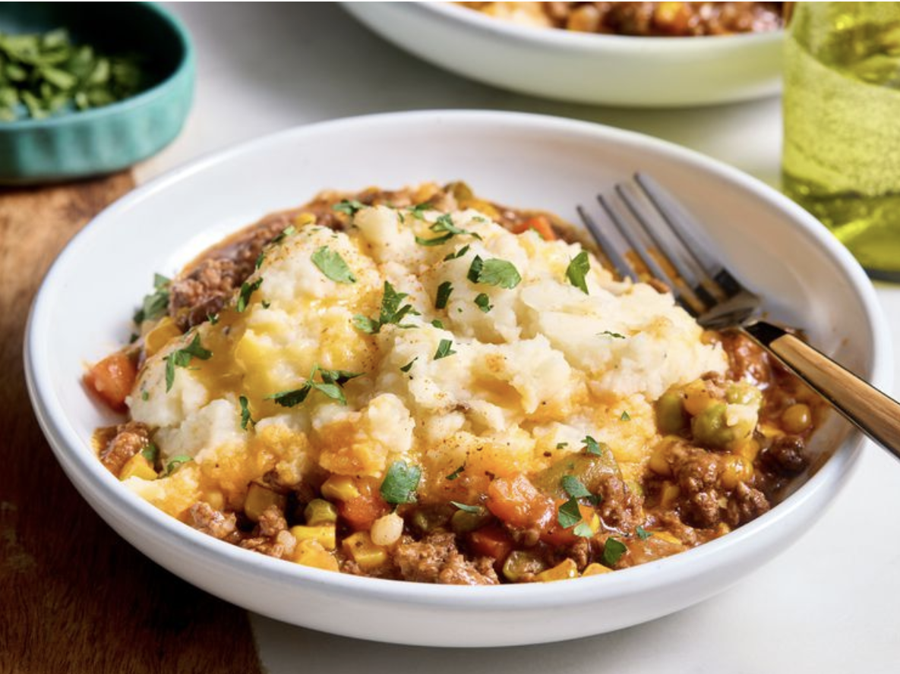

Shepherd's Pie Recipe

Description
Tasty ground beef topped with cheesy mashed potatoes - this slow cooker
shepherd's pie hits all the spots if your looking for a hearty comfort
dish.
Ingredients
- 2 lbs. lean ground beef
- 1 cup onion, chopped
- 3 cloves garlic, minced
- 1 12oz. package frozen mixed vegetables
- 1 1/2 cups lower-sodium beef broth
- 1/4 cup tomato paste
- 1 tablespoon Worcestershire sauce
- 1 tablespoon quick-cooking tapioca, finely crushed
- 1 teaspoon freshly ground black pepper
- 2 24oz. packages refrigerated mashed potatoes
- 1 cup shredded cheddar cheese
Steps
- Gather all ingredients.
-
Cook ground beef and onion in a 12-inch skillet over medium heat until
beef is browned and onion is tender; about 8 minutes. Add garlic. Cook
and stir until fragrant, about 1 minute; drain fat.
-
Add beef mixture and frozen mixed vegetables to a 5- to 6-quart slow
cooker.
-
Whisk together beef broth, tomato paste, Worcestershire sauce, tapioca,
Italian seasoning, salt, and pepper in a small bowl. Pour over beef
mixture; stir to combine.
- Cover and cook on Low for 4 to 6 hours or on High for 3 hours.
-
Prepare mashed potatoes according to package directions. Stir in cheese.
Spread atop the beef mixture.
- Cover and cook on High for 20 minutes.
- Garnish with paprika and parsley
Home